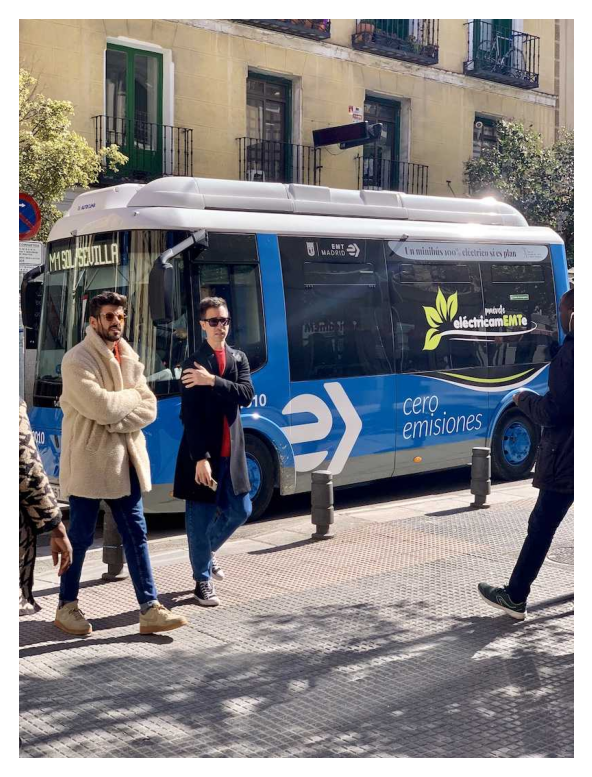
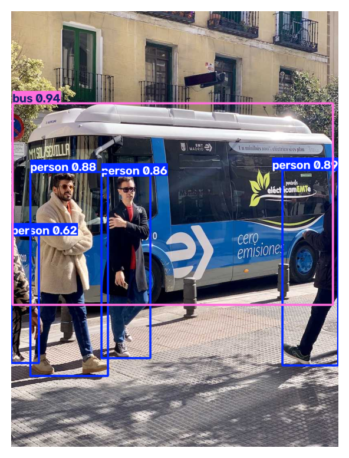
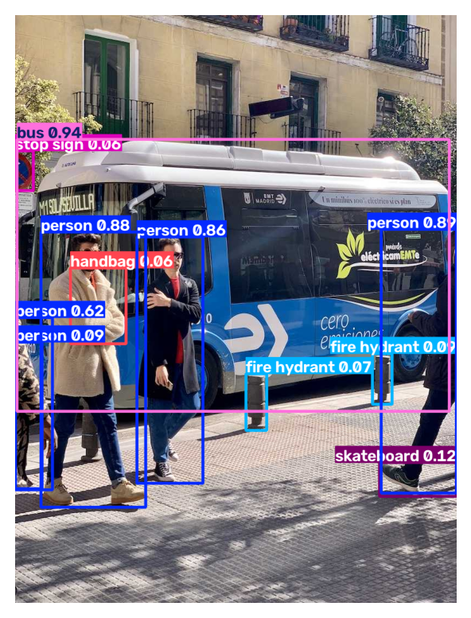
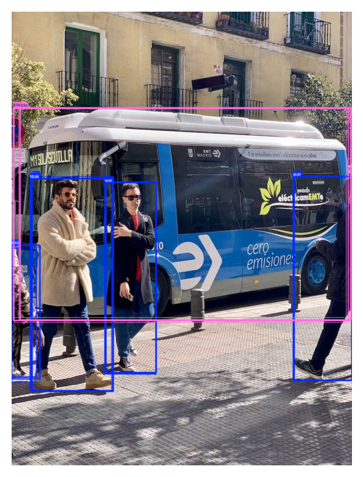

# ▶ 준비 셀 — 그대로 실행하세요.
import matplotlib.pyplot as plt
from PIL import Image
from ultralytics import YOLO
from ultralytics.utils import ASSETS
img = str(ASSETS / 'bus.jpg') # ultralytics에 들어 있는 예시 사진
print('준비 완료!')준비 완료!
⏱ 75분 · 9주차 실습 — 사전 학습된 탐지 모델 YOLO로 사진 속 물체를 찾고, 이론 9장의 출력·신뢰도·NMS·IoU를 코드로 확인하기
이론 9장에서 탐지 모델의 출력이 클래스, 박스, 신뢰도로 이루어져 있고, 신뢰도로 후보를 거른 뒤 NMS로 겹친 박스를 정리한다고 배웠습니다.
실제 탐지 모델은 사진을 넣으면 무엇을 내놓을까요?
COCO 사진으로 사전 학습된 YOLO를 내려받아 사진 속 물체를 찾고, 신뢰도 기준과 NMS 기준을 바꿔 가며 결과가 어떻게 달라지는지 봅니다. 마지막에는 카메라로 찍은 사진을 바로 탐지합니다.
이번 시간에 반복할 패턴: YOLO('yolo11n.pt') · model(사진) · r.plot() · r.boxes의 cls·conf·xyxy · conf=와 iou= · IoU 함수.
대응 이론: Ch09 객체탐지
Colab 설정: GPU 없이도 됩니다. 맨 위의 설치 셀부터 실행합니다.
| 표시 | 뜻 |
|---|---|
| ▶ | 그대로 실행합니다 |
| ✍️ | 보여 준 코드를 손으로 타이핑해서 실행합니다. 빈칸 ___은 채웁니다 |
| 📝 | 과제. 힌트를 보고 스스로 풉니다 |
# ▶ 준비 셀 — 그대로 실행하세요.
import matplotlib.pyplot as plt
from PIL import Image
from ultralytics import YOLO
from ultralytics.utils import ASSETS
img = str(ASSETS / 'bus.jpg') # ultralytics에 들어 있는 예시 사진
print('준비 완료!')준비 완료!준비 완료!가 나오면 준비가 끝난 것입니다.
YOLO는 사진을 한 번 훑어 물체의 박스와 클래스를 함께 내는 탐지 모델입니다. yolo11n.pt는 COCO 사진으로 사전 학습된 가장 작은 YOLO의 가중치입니다. 처음 실행하면 가중치를 내려받습니다.
# ✍️ 직접 입력
model = YOLO('yolo11n.pt')
print(len(model.names))
print(model.names[0], model.names[2], model.names[5])80
person car bus80과 person car bus가 나옵니다. COCO의 클래스 80개를 찾도록 학습된 모델입니다. 이론 9장 마지막 절에서 말한, 대량의 데이터로 사전 학습한 탐지 모델이 바로 이것입니다.
예시 사진을 먼저 봅니다.
# ▶ 그대로 실행하세요 — 예시 사진
plt.imshow(Image.open(img))
plt.axis('off')
plt.show()
모델에 사진을 넣으면 결과 목록이 돌아옵니다. verbose=False는 진행 기록을 출력하지 않게 합니다. 사진을 한 장 넣었으니 results[0]이 그 사진의 결과입니다. r.plot()은 박스와 클래스, 신뢰도를 그린 그림을 돌려줍니다. 색 순서가 BGR이라 [:, :, ::-1]로 RGB로 바꿔 그립니다.
# ✍️ 직접 입력
results = model(img, verbose=False)
r = results[0]
plt.imshow(r.plot()[:, :, ::-1])
plt.axis('off')
plt.show()
버스 1대와 사람 4명에 박스가 그려집니다.
r.boxes에 박스마다 클래스 번호(cls), 신뢰도(conf), 좌표(xyxy)가 들어 있습니다. 이론 9장의 “출력 = 클래스 + 박스 + 신뢰도”를 그대로 꺼내 봅니다.
# ✍️ 직접 입력
for c, p, b in zip(r.boxes.cls.tolist(), r.boxes.conf.tolist(), r.boxes.xyxy.tolist()):
print(r.names[int(c)], round(p, 2), [round(v) for v in b])bus 0.94 [4, 229, 796, 728]
person 0.89 [671, 395, 810, 879]
person 0.88 [47, 400, 239, 904]
person 0.86 [223, 409, 344, 860]
person 0.62 [0, 556, 69, 872]첫 줄은 bus 0.94 [4, 229, 796, 728]에 가까운 값입니다. 한 줄이 물체 하나입니다. 클래스는 분류의 출력, 네 숫자는 회귀의 출력, 가운데 숫자는 신뢰도입니다. 신뢰도가 높은 순서로 나옵니다.
xyxy는 박스를 왼쪽 위 모서리 \((x_1, y_1)\)와 오른쪽 아래 모서리 \((x_2, y_2)\)로 적습니다. 이론 9장의 \((x, y, w, h)\)로 바꾸는 함수를 만듭니다. 너비는 \(x_2 - x_1\), 높이는 \(y_2 - y_1\)입니다.
# ✍️ 직접 입력
def to_xywh(b):
x1, y1, x2, y2 = b
return (x1, y1, x2 - x1, y2 - y1)
print([round(v) for v in to_xywh(r.boxes.xyxy[0].tolist())])[4, 229, 792, 499][4, 229, 792, 499]에 가까운 값이 나옵니다. 버스 박스는 너비 792, 높이 499픽셀입니다.
모델은 후보 박스를 넉넉히 내고, 신뢰도가 기준보다 낮은 후보를 버립니다. 기본 기준은 0.25입니다. conf=로 기준을 바꿔 남는 박스를 셉니다.
# ✍️ 직접 입력
for conf in [0.05, 0.25, 0.7]:
r_c = model(img, conf=conf, verbose=False)[0]
print(conf, len(r_c.boxes), [r_c.names[int(c)] for c in r_c.boxes.cls])0.05 11 ['bus', 'person', 'person', 'person', 'person', 'skateboard', 'fire hydrant', 'person', 'fire hydrant', 'handbag', 'stop sign']
0.25 5 ['bus', 'person', 'person', 'person', 'person']
0.7 4 ['bus', 'person', 'person', 'person']박스 수는 차례로 11, 5, 4입니다.
# ▶ 그대로 실행하세요 — 기준 0.05로 탐지한 결과
r_low = model(img, conf=0.05, verbose=False)[0]
plt.imshow(r_low.plot()[:, :, ::-1])
plt.axis('off')
plt.show()
기준을 0.05로 낮추면 소화전(fire hydrant), 정지 표지판(stop sign), 가방(handbag)처럼 신뢰도가 낮은 엉뚱한 박스까지 남습니다. 0.7로 높이면 신뢰도 0.62였던 사진 왼쪽 끝의 사람이 빠집니다. 기준이 낮으면 엉뚱한 박스가 늘고, 높으면 놓치는 물체가 생깁니다.
신뢰도로 거른 뒤에도 한 물체에 박스가 여러 개 남으면 NMS가 정리합니다. iou=는 NMS에서 “같은 물체”로 볼 IoU 기준입니다. 기본값은 0.7이고, 채택한 박스와 IoU가 이보다 큰 박스를 지웁니다. 이론 9장에서는 0.5를 예로 들었습니다. 기준을 1.0으로 올리면 완전히 같은 박스가 아닌 한 지우지 않으므로, NMS를 끈 것과 같습니다.
# ✍️ 직접 입력
r_all = model(img, iou=1.0, verbose=False)[0]
names_all = [r_all.names[int(c)] for c in r_all.boxes.cls]
print(len(names_all), names_all.count('bus'), names_all.count('person'))
plt.imshow(r_all.plot(labels=False, line_width=1)[:, :, ::-1])
plt.axis('off')
plt.show()47 10 37
47 10 37이 나옵니다. 2절에서 5개였던 박스가 47개가 되었습니다. 버스 한 대에 10개, 사람 네 명에게 37개입니다. 박스들이 몇 픽셀 차이로 거의 같은 자리에 겹쳐 있어서 그림에서는 테두리가 두꺼워 보입니다. 모델은 물체 하나에 비슷한 박스를 여러 개 내놓고, NMS가 그중 신뢰도가 가장 높은 것만 남겨 왔던 것입니다.
겹친 박스들이 정말 많이 겹치는지 IoU로 확인합니다. 이론 9장의 좌표 계산 절차를 함수로 만듭니다. 교집합은 시작점 가운데 큰 값부터 끝점 가운데 작은 값까지이고, 두 박스가 떨어져 있으면 너비나 높이를 0으로 둡니다.
# ✍️ 빈칸(___)을 채운 뒤 실행하세요
#* def iou(a, b):
#* x1, y1 = max(a[0], b[0]), max(a[1], b[1])
#* x2, y2 = ___(a[0] + a[2], b[0] + b[2]), ___(a[1] + a[3], b[1] + b[3])
#* inter = max(0, x2 - x1) * max(0, y2 - y1)
#* return inter / (a[2] * a[3] + b[2] * b[3] - ___)
#*
#* print(iou((2, 1, 4, 3), (4, 2, 4, 3)))
def iou(a, b):
x1, y1 = max(a[0], b[0]), max(a[1], b[1])
x2, y2 = min(a[0] + a[2], b[0] + b[2]), min(a[1] + a[3], b[1] + b[3])
inter = max(0, x2 - x1) * max(0, y2 - y1)
return inter / (a[2] * a[3] + b[2] * b[3] - inter)
print(iou((2, 1, 4, 3), (4, 2, 4, 3)))0.2출력은 0.2입니다. 이론 9장에서 칸을 세어 구한 값과 같습니다.
NMS를 끈 결과에서 버스 박스 두 개를 꺼내 IoU를 구합니다.
# ✍️ 직접 입력
bus_boxes = [to_xywh(b) for c, b in zip(r_all.boxes.cls.tolist(), r_all.boxes.xyxy.tolist())
if r_all.names[int(c)] == 'bus']
print(len(bus_boxes))
print(round(iou(bus_boxes[0], bus_boxes[1]), 2))10
0.95버스 박스는 10개이고, 그중 두 박스의 IoU는 0.95에 가깝습니다. 이 값이 기준 0.7보다 크므로 NMS는 둘을 같은 버스로 보고 신뢰도가 낮은 쪽을 지웁니다. 그래서 기본 설정에서는 버스 박스가 하나만 남았습니다.
아래 셀들은 Colab에서만 실행됩니다. 사람은 찍지 않습니다. 컵, 의자, 노트북, 휴대폰, 병처럼 주변 물건을 찍습니다.
휴대폰으로 Colab을 열었다면 사진 올리기가 가장 간단합니다. 파일 선택 창에서 카메라를 고르면 바로 찍어 올릴 수 있습니다.
# ▶ 그대로 실행하세요 — (Colab) 사진 올리기
from google.colab import files
uploaded = files.upload()노트북 컴퓨터라면 웹캠으로 찍을 수 있습니다. 아래 셀을 실행하면 카메라 화면과 찍기 버튼이 나타납니다. 처음에는 브라우저가 카메라 사용을 허락할지 묻습니다.
# ▶ 그대로 실행하세요 — (Colab) 웹캠으로 사진 찍기
from IPython.display import display, Javascript
from google.colab.output import eval_js
from base64 import b64decode
def take_photo(filename='photo.jpg'):
display(Javascript('''
async function takePhoto() {
const div = document.createElement('div');
const btn = document.createElement('button');
btn.textContent = '찍기';
const video = document.createElement('video');
video.style.display = 'block';
const stream = await navigator.mediaDevices.getUserMedia({video: {facingMode: 'environment'}});
document.body.appendChild(div);
div.appendChild(video);
div.appendChild(btn);
video.srcObject = stream;
await video.play();
google.colab.output.setIframeHeight(document.documentElement.scrollHeight, true);
await new Promise((resolve) => btn.onclick = resolve);
const canvas = document.createElement('canvas');
canvas.width = video.videoWidth;
canvas.height = video.videoHeight;
canvas.getContext('2d').drawImage(video, 0, 0);
stream.getVideoTracks()[0].stop();
div.remove();
return canvas.toDataURL('image/jpeg', 0.9);
}'''))
data = eval_js('takePhoto()')
with open(filename, 'wb') as f:
f.write(b64decode(data.split(',')[1]))
return filename
name = take_photo()
print(name)찍거나 올린 사진을 탐지합니다. 올린 사진이면 name에 파일 이름을 넣습니다. 예를 들어 name = list(uploaded)[0]입니다.
# ✍️ 직접 입력
r_me = model(name, verbose=False)[0]
plt.imshow(r_me.plot()[:, :, ::-1])
plt.axis('off')
plt.show()
for c, p in zip(r_me.boxes.cls.tolist(), r_me.boxes.conf.tolist()):
print(r_me.names[int(c)], round(p, 2))찍은 물건마다 박스와 클래스, 신뢰도가 나옵니다. 80개 클래스에 없는 물건은 박스가 그려지지 않거나 비슷한 클래스로 나옵니다.
주변 물건을 세 장 찍어 탐지하고, 사진마다 찾은 물체와 신뢰도를 표에 적습니다.
# 📝
#> 힌트: 7절의 사진 올리기나 take_photo()로 사진을 찍고, 탐지 셀을 사진마다 다시 실행합니다.
name = take_photo()
r_me = model(name, verbose=False)[0]
plt.imshow(r_me.plot()[:, :, ::-1])
plt.axis('off')
plt.show()
for c, p in zip(r_me.boxes.cls.tolist(), r_me.boxes.conf.tolist()):
print(r_me.names[int(c)], round(p, 2))| 사진 | 찍은 물건 | 탐지 결과 (클래스, 신뢰도) |
|---|---|---|
| 1 | ✏️ | ✏️ |
| 2 | ✏️ | ✏️ |
| 3 | ✏️ | ✏️ |
예시 답: 컵(
cup), 노트북(laptop), 휴대폰(cell phone), 병(bottle), 의자(chair)처럼 80개 클래스에 있는 물건은 대체로 0.5 이상의 신뢰도로 찾습니다. 물건이 작거나 일부만 찍히면 신뢰도가 낮아지거나 박스가 나오지 않습니다.
과제 1에서 박스가 나오지 않은 물건이 있다면, 그 물건이 80개 클래스에 들어 있는지 확인합니다. 클래스에 있다면 신뢰도 기준을 0.1로 낮춰 다시 탐지해 봅니다.
# 📝
#> 힌트: model.names.values()에 클래스 이름 80개가 들어 있습니다. 'cup' in model.names.values()처럼 확인합니다.
#> 힌트: 다시 탐지할 때는 model(name, conf=0.1)처럼 기준을 넣습니다.
print('cup' in model.names.values(), 'pen' in model.names.values())True False✏️ 확인한 물건과 결과:
예시 답: 웹페이지의 출력은
True False입니다. 컵은 80개 클래스에 있지만 펜은 없습니다. 클래스에 없는 물건은 기준을 낮춰도 그 이름으로는 찾지 못합니다. 이런 물건을 찾으려면 이론 9장 마지막 절처럼 내가 그린 박스 레이블로 미세 조정해야 합니다.
| 배운 것 | 핵심 |
|---|---|
| 사전 학습된 탐지 모델 | YOLO('yolo11n.pt'). COCO 80개 클래스 |
| 탐지 | r = model(사진)[0], r.plot()으로 박스를 그린 그림 |
| 출력 | r.boxes의 cls(클래스), conf(신뢰도), xyxy(박스). \((x, y, w, h)\)로 바꾸면 \((x_1, y_1, x_2 - x_1, y_2 - y_1)\) |
| 신뢰도 기준 | conf=. 낮추면 엉뚱한 박스가 늘고, 높이면 놓치는 물체가 생김 |
| NMS 기준 | iou=. 1.0으로 올리면 NMS를 끈 것과 같아 박스가 5개에서 47개(버스 10, 사람 37)로 |
| IoU | 시작점 중 큰 값부터 끝점 중 작은 값까지가 교집합. 겹친 버스 박스 두 개의 IoU 0.95 |
| 카메라 | 휴대폰은 사진 올리기에서 카메라, 노트북은 take_photo() |
다음: 실습 10에서는 이미지에서 텍스트로 넘어갑니다.